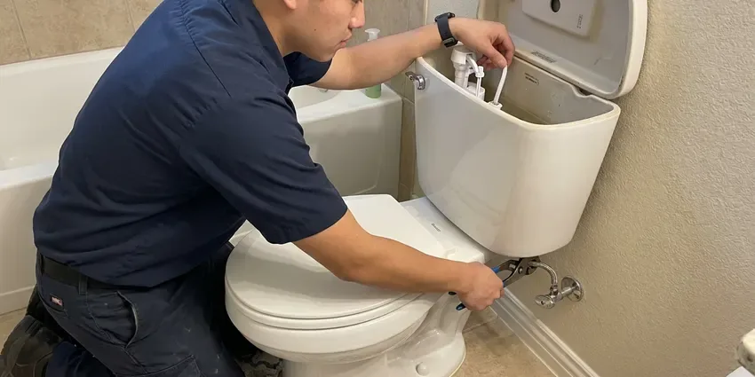
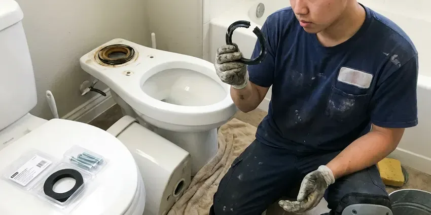

Sink Installation in Rocklin, CA
Ready for a new sink in your kitchen or bathroom? FBL Plumbing handles all types of sink installation projects throughout Rocklin, CA.
- Friendly, Local Plumbers
- Satisfaction Guaranteed
- Fast Scheduling for Installs
- Prompt, Reliable Service

Get Your New Sink Installed Right in Rocklin, CA.
Call us with your sink model and we will give you a clear installed price.
Professional Sink Installation Services in Rocklin, CA
At FBL Plumbing, we understand that a properly installed sink is essential for both looks and function. We handle all types of installations, from simple drop-ins to complex undermount and wall-mounted units, ensuring every connection is watertight and durable for Rocklin properties.
Our expertise includes:
- Set undermount bowls with clips, epoxy and silicone seals
- Compliance with Northern California plumbing codes
- Garbage disposal and faucet hookups

Additional Bathroom Plumbing Services in Rocklin, CA
From toilets to showers, our bathroom plumbing team in Rocklin, CA handles repairs, installs, and upgrades with tidy, code-compliant work.


Toilet Repair service for Rocklin homeowners


Professional toilet bowl replacement, Rocklin


Customers
Why Choose FBL Plumbing for Sink Installation in Rocklin, CA?
Choosing the right plumber for sink installation prevents future leaks and costly repairs. Our team has broad experience with all sink types and plumbing configurations.
- Remodel Friendly, We coordinate timing with cabinet and countertop installers.
- Local Expertise, We understand the specific plumbing requirements and water conditions in Rocklin, CA.
- Water Hardness, Our installations account for the water conditions in Rocklin, using sealants and connections that resist mineral buildup.
Citywide Coverage
We install bathroom sinks throughout Rocklin, whether it is a single vanity refresh or a full primary bath remodel. Every neighborhood gets the same scheduling options and the same quality work.
Experienced Team
Each FBL Plumbing plumber is licensed, insured, and focused on providing the best possible service for your sink installation, treating your home with respect and care.
Safety-First Approach
Safety and code compliance are top priorities for every sink installation we do in Rocklin, CA. We ensure all connections, drains, and water lines meet strict local and state regulations.
Trusted Certified Rocklin Plumbing Services Professionals
At FBL Plumbing, we take pride in providing certified plumbing services throughout Rocklin, CA. Backed by recognized industry credentials, our experienced plumbers combine technical skill with genuine customer care. Whether it is repair, installation, or maintenance, we follow strict safety and quality standards to deliver lasting results you can trust.
Call Us Now PHCC Plumbing Contractor Recognition
PHCC Plumbing Contractor Recognition Better Business Bureau (BBB) Accreditation
Better Business Bureau (BBB) Accreditation Angi Certified Pro
Angi Certified Pro ISO 9001 Quality Management Certification
ISO 9001 Quality Management CertificationExpert Sink Installation Services in Rocklin, CA
Faucet & Disposal Integration in Rocklin, CA
Often, a new sink installation goes hand-in-hand with a new faucet and garbage disposal. We carefully integrate these components, ensuring all connections are compatible and functioning correctly. From single-handle pull-down faucets to touchless models and powerful disposals, we make sure everything is installed at the same time as your new sink. This combined service saves you time and ensures all parts work together smoothly in your Rocklin, CA home.

Sink Replacement & Upgrades in Rocklin
Replacing an old, worn-out sink can significantly improve the look and function of your space. We handle the careful removal of your existing sink and dispose of it properly. Our team can help you upgrade to a larger, more modern, or more durable sink that fits your existing countertop cutout or advise on modifications needed. This service is ideal for refreshing your kitchen or bathroom without a full remodel in Rocklin.
Sink Installation Cost Factors in Rocklin, CA
A simple drop-in swap costs much less than a new undermount on stone or a vessel sink that needs a drain relocation. Moving the drain, adding a second sink or replacing old galvanized stubs adds labor. We price the plumbing separately from the countertop so you can compare. You will know the full installed cost before we start.
Sink Installation Cost Comparison in Rocklin, CA
The cost of sink installation varies based on sink type, complexity of the job, and any necessary modifications to plumbing or countertops. FBL Plumbing provides honest, upfront pricing after a thorough assessment. We aim to offer competitive rates for high-quality work, ensuring you receive excellent value for your investment in your Rocklin, CA home. We help you understand the factors influencing the total cost.
Wall-Mount and ADA Sink Installation in Rocklin, CA
Wall-hung sinks need carriers or heavy blocking to meet load requirements. For accessible bathrooms, we set the rim height and knee clearance to ADA guidelines and insulate or shield exposed pipes under the basin. This is common in aging-in-place remodels and small commercial restrooms. We make sure the sink is strong enough to lean on safely.
Commercial Sink Installation in Rocklin, CA
For businesses in Rocklin, we provide dedicated commercial sink installation for kitchens, restrooms, and industrial applications. This includes multi-compartment sinks, handwashing stations, and specialized fixtures that meet health department regulations and commercial plumbing standards. Our installations are designed for durability and high-volume use, reducing downtime for your business operations.
Pedestal Sink Installation in Rocklin, CA
Pedestal sinks are popular for their classic look and space-saving design, but their installation can be challenging due to the exposed plumbing. Our plumbers ensure the drain and supply lines are perfectly aligned within the pedestal column and securely anchored to the wall. This prevents wobbling and keeps all connections hidden and watertight. We handle the delicate nature of ceramic pedestals with care, providing a stable and attractive fixture for your home in Rocklin, CA.

Faucet & Drain Assembly for New Sinks in Rocklin, CA
A new sink installation often includes new faucets and drain assemblies. We meticulously install all components, from single-handle to widespread faucets, and ensure proper P-trap and drain connections. We work with all major brands like Moen, Delta, Kohler, and Pfister, confirming compatibility and efficient water flow. Our attention to detail prevents common post-installation issues like slow drains or drips.
Local Sink Installation Near Me in Rocklin, CA
Finding a plumber who installs sinks carefully can make or break a bathroom update. Our team works in Rocklin every week and can fit your install around countertop and cabinet deliveries. We arrive with the drains and valves your sink needs.
We aim to be the go-to plumbing experts for new sink installations. Whether you are in a historic home or a new build, our local plumbers are ready to deliver efficient and professional service right to your doorstep.
FBL Plumbing at a Glance
- Licensed and insured plumbers serving Rocklin, CA
- Same-day appointments and 24/7 emergency response
- Upfront, flat-rate pricing before work begins
- 4.8-star rated by 834+ Northern California customers
Rocklin Map
Rocklin Information
- Population
- 73,472
- Area codes
- 916/530/707
- Service area
- Rocklin and communities within 40 miles
- Nearby
- Roseville, Lincoln, Citrus Heights, Antelope
Rural properties around Rocklin often rely on private wells, which may need treatment for iron, sediment, or other minerals. Proper sink installation matters for homes in Rocklin, CA, because tight, well-supported connections hold up longer against the stress that water and time put on plumbing.
Expert Services
Trust our professionals for reliable FBL Plumbing solutions in Rocklin, CA.
Our Specialized Plumbing Services in Rocklin, CA
At FBL Plumbing, we provide a complete range of plumbing services across Rocklin, CA. From leak detection to full system installations, our team ensures fast, precise, and affordable service for both residential and commercial properties. Explore our core services below:


How Our Sink Installation Process Works in Rocklin, CA
Here is how we get your new bathroom sink in and working.
Request a Quote
Call (669) 319-2034 with your sink style or model number. We confirm the scope and give you a clear installed price.
Prep and Remove
We shut off the water, remove the old sink and inspect the drain and valves. Any old stops or stubs that will not hold are replaced.
Install and Test
We set the new sink, connect the drain and supplies, and fill the bowl to test. Then we clean the area and walk you through the finished work.
Frequently Asked Questions About Sink Installation in Rocklin
Installing a drop-in or pedestal sink typically runs $250 to $550 for labor. Undermount and vessel sinks typically cost $350 to $800, and adding a second sink or relocating a drain can push it to $900 to $1,800.
To prepare for your sink installation, please clear out the cabinet beneath the sink and ensure easy access to the work area. If you are supplying the new sink, have it on hand for our plumbers. Clearing the space helps our team work efficiently and safely.
Most standard sink installations can be completed within 2 to 4 hours, assuming no major plumbing modifications are required. More complex installations, such as those requiring new water lines or drain rerouting, might take longer. We will give you an estimated timeframe during our initial assessment.
Yes. We often work with fabricators who cut the hole and mount the bowl, then we complete the drain and supply connections. We can also mount the bowl on our own.
Absolutely. If your new sink is compatible, we can easily install a new garbage disposal unit as part of the installation process. We ensure proper electrical connections, secure mounting, and correct drainage, making sure your kitchen plumbing is fully functional.
Signs you may need a new sink include extensive cracking or chipping, widespread rust, persistent leaks that cannot be sealed, significant water damage around the sink basin, or if you are upgrading your home's look. Small leaks or minor clogs can often be repaired, but widespread damage generally warrants replacement.
We strongly recommend it if the valves are old multi-turn stops. Mineral buildup often seizes them, and a fresh quarter-turn valve costs little compared to a leak.
Common signs you might need a new sink include persistent leaks around the basin or drain, cracks or chips in the material, severe staining that won't clean, rust, or if you're simply upgrading for style or function. An old, damaged sink can also lead to water damage in your vanity.
What People Are Saying About Our Plumbing Experts?

Sofia M.
Two new toilets installed in one visit, no mess left behind, and the tech even adjusted a faucet he noticed was dripping. Fair pricing and really friendly.
Toilet Installation · North Highlands, CA
Mark T.
When our office needed drain cleaning, FBL Plumbing provided quick, reliable service. The plumber arrived on time and made sure every drain flowed perfectly before leaving. Very satisfied.
Drain Cleaning · Antelope, CALaura S.
I scheduled a water heater replacement, and the team made the process smooth and affordable. The new unit works perfectly, and they cleaned up after completing the job.
Water Heater Replacement · Citrus Heights, CA
Patricia H.
We had a slab leak that two other companies could not find. FBL Plumbing located it in under an hour, explained our options, and the price matched the quote to the dollar.
Slab Leak Repair · Roseville, CA
Emily R.
I called FBL Plumbing for plumbing repair, and the technician was fast, polite, and thorough. They explained the problem clearly and fixed it the same day. I will definitely hire them again. Highly recommended!
Plumbing Repair · Folsom, CA
Robert G.
The trenchless sewer replacement saved our front yard. They walked us through the camera inspection footage first so we knew exactly what we were paying for.
Sewer Line Replacement · Folsom, CA